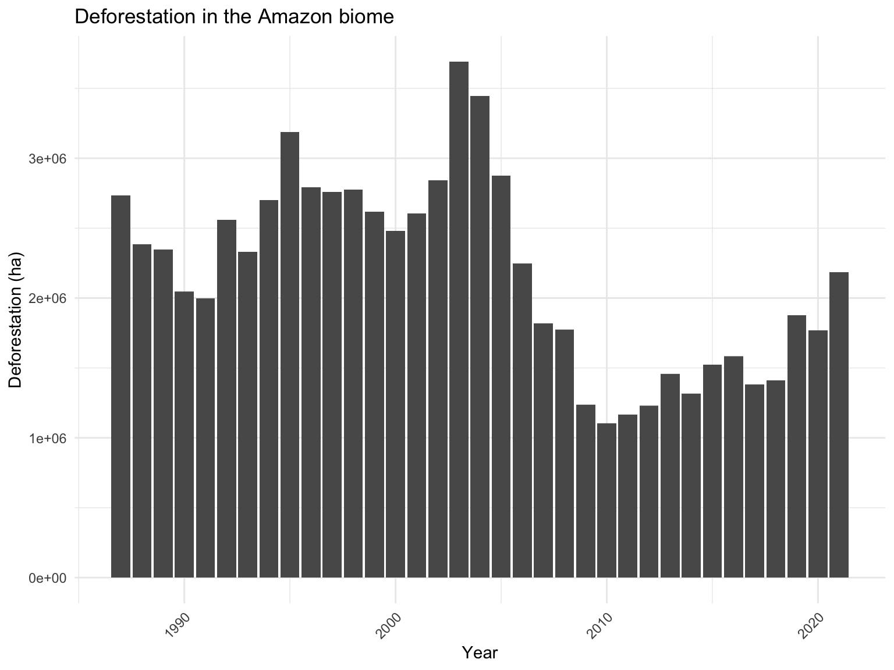
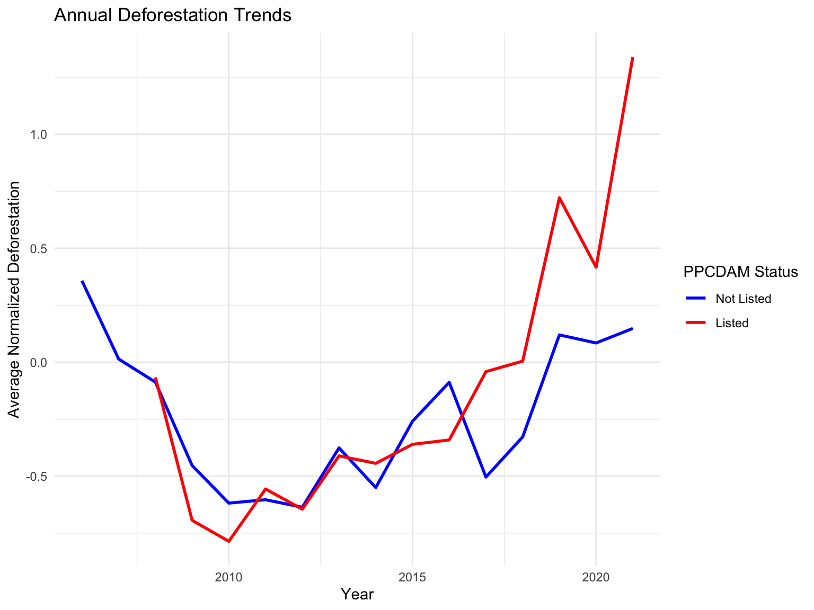
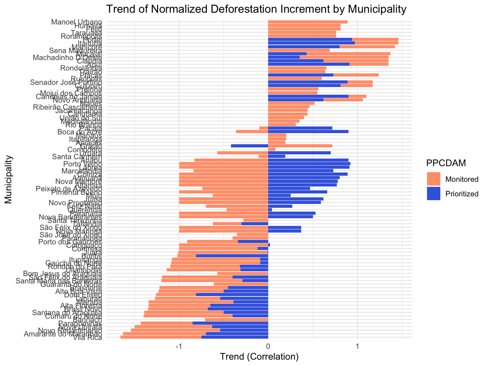
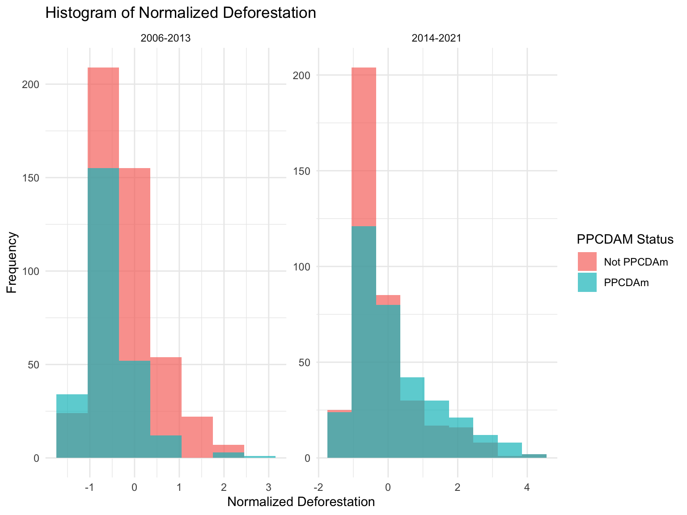
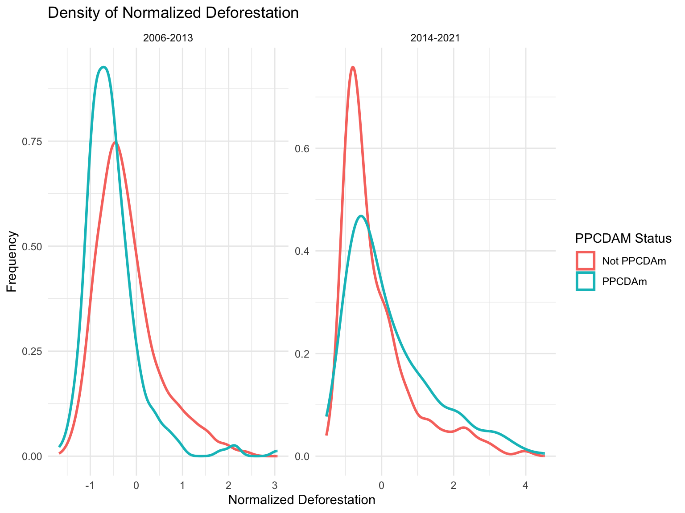
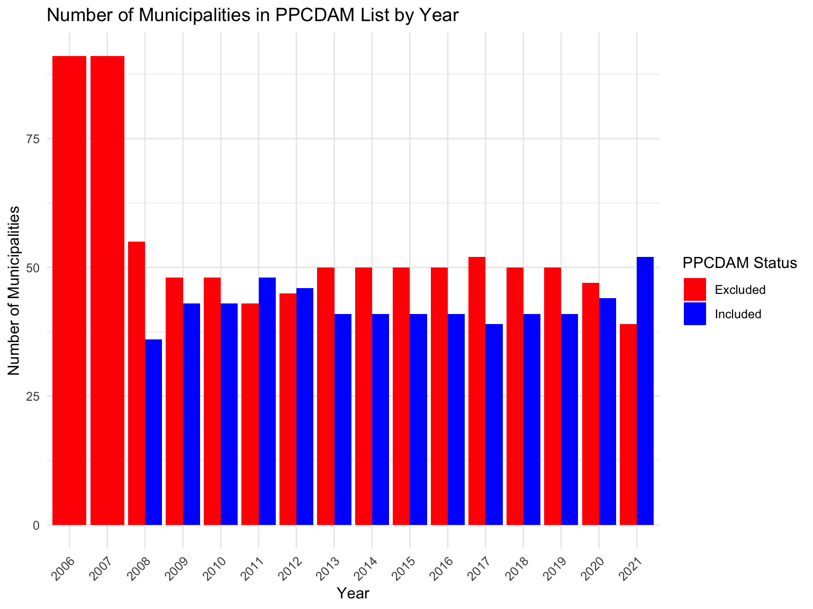

The PPCDAm Effect on the Deforestation of the Brazilian Amazon: Exploratory Data Analysis of Local Implementation Approach
Introduction
The literature seeking explanations for the reduction in Amazon deforestation between 2006 and 2012 and the intensification of forest clearing between 2013 and 2022 highlights one crucial institutional factor: the environmental public policy carried out by the federal government (Assunção, Rocha, 2019; Hargrave, Kis-Katos, 2013). These studies indicate that federal policies such as the Action Plan for the Prevention and Control of Deforestation in the Legal Amazon (PPCDAm) contributed to the decline in biome degradation during the first period, while the gradual dismantling of these actions led to a reversal of the trend in the second (figure 1).
However, the literature does not explain the mechanisms through which the federal government’s environmental actions control the degradation at the local level. Additionally, there are three reasons to believe that the federal government’s actions in the Amazon are not automatic but mediated by other political and institutional factors:
- Brazilian environmental policy is decentralized and has been undergoing redesigns at the state and municipal levels;
- The local political and socioeconomic context matters;
- Deforestation data from the Amazon indicates variations in deforestation trajectories among municipalities under the same environmental pressures.
What causal factors explain the variation in the enforcement of federal environmental rules among Amazonian municipalities between 2006 and 2021? The hypothesis is that the variation in factors along the vertical axis of intergovernmental relations and the horizontal axis of state-society relations leads to different outcomes (Kazepov; Barberis, 2012; Sellers; Lidström; Bae, 2020).
This is a partial report of the work that is still in progress. In this text I drive an exploratory data analysis trying to identify differences in the success or failure of the implementation of PPCDAm despite its overall success.
In the following steps of the work, I aim to run a Difference-in-Difference analysis and/or a time-series cross-section analysis, in an attempt to find local political and institutional factors that explain variation in the deforestation rate among municipalities.
The dataset
I use environmental, social and economic data to explore trends and patterns of deforestation in the Amazon biome (my dependent variable) and possible effects related to social and economic aspects (my independent variables). The data is sourced from the datazoom.amazonia R package, which facilitates access to official Brazilian Amazon data, including agriculture, deforestation, production, etc. The package provides functions that download and pre-process selected datasets. The datasets that I use are:
Environemntal:
MapBiomas: A Brazilian project that provides annual land use and land cover reports. The data is based on satellite images and provides information on the Amazon biome, including deforestation and regeneration of vegetation. Areas are measured in hectares (ha).
Imazon: A Brazilian NGO that provides reports on deforestation in the Amazon biome. The dataset Loads data categorizing each municipality by the level of deforestation pressure it faces. The categories used by Imazon have three levels, ranging from 0 to 3.
Social:
- IPS: The Social Progress Index (IPS) is a composite index that measures social progress in Brazilian municipalities. Includes information on the overall social progress score, as well as scores for specific components such sanitation, health, and education. The data is available for 2014, 2018, 2021, and 2023.
Economic:
PIB-Munic: The Brazilian Institute of Geography and Statistics (IBGE) provides data of Brazilian municipalities on the Gross Domestic Product (GDP) at current prices, taxes, net of subsidies on products, gross value added, total and by economic activity, and respective shares. Data is available from 2002 to 2018.
PAM: The Municipal Agricultural Production (PAM) is an annual survey conducted by IBGE which provides on the production of crops in Brazilian municipalities. Output is only included in the dataset if the planted area occupies over 1 acre. The data available has a yearly frequency and is available from 1974 to the present.
PPM: The Municipal Livestock Production (PPM) is an annual survey conducted by IBGE which provides data on the production of livestock in Brazilian municipalities, such inventories (e.g:cattle, pigs and hogs) and production (e.g: milk, eggs, honey). The data available has a yearly frequency and is available from 1974 to the present.
SIGMINE: The National Mining Agency (ANM) provides data on mining legally activities in Brazilian municipalities. The data includes information on location, status, product being mined and area in square meters etc
Institutional:
I constructed a dataset with data about the PPCDAm policy. The dataset includes information on the year when the municipality was included in the list of municipalities targeted by the PPCDAm policy, the year when the municipality was removed from the list, and the status of the municipality in the list (prioritized or monitored). The data was constructed by myself using information from the Ministry of Environment.
Issues to solve
I faced issues when loading the dataset related to the social and economic variables. To address this issue, I will use other oficial datasets.
Due to those issues, my exploratory data analysis did not dive deep into the relationship between social and economic variables and deforestation. I focused on the environmental data and the relationship between the PPCDAm policy and deforestation in the Amazon biome.
Exploratore Data Analysis
The Action Plan for the Prevention and Control of Deforestation in the Legal Amazon (PPCDAm), initiated in 2006, is the central public policy promoted in Brazil to reduce deforestation in the Amazon biome. In the governance arrangement of this policy, the federal government establishes, in addition to direct inspection and control actions, induction and constraint mechanisms for municipalities to pursue environmental conservation goals. The target of the actions is the region known as the “arc of deforestation,” which concentrates around 250 municipalities where forest destruction has historically been concentrated.
Since 2009, 91 municipalities have begun to be targeted by the federal government based on their history of deforestation, with some prioritized in actions and others only monitored. The condition for leaving the list is a significant reduction in deforestation. With this arrangement, the policy is a test for municipal political and institutional dynamics, allowing the performance of local governments too be assessed to remain outside the list created by the federal government or to leave it. Assunção and Rocha (2019) explore this with a difference-in-differences test. The analysis carried out by the authors indicates that the PPCDAm policy significantly reduced overall deforestation.
Interpretation of the Normalized Increment Rate:
To this exploratory data analysis I used a normalized measure of the annual deforestation increase to smoothen the cross-sectional deforestation variation arising from municipality size heterogeneity, as Assunção and Rocha (2019).
The Normalized_incremento variable is a standardized measure of the annual deforestation increase, adjusted for the mean and standard deviation of each municipality’s deforestation rates. This allows for comparison across municipalities with different sizes and baseline deforestation rates.
- A negative Normalized_incremento indicates that the deforestation rate for a given year is below the average deforestation rate for that municipality.
- A positive Normalized_incremento indicates that the deforestation rate for a given year is above the average deforestation rate for that municipality.
The general trajectory of deforestation in the Amazon shows a reduction after implementing the PPCDAm, followed by a subsequent increase in deforestation, which the literature attributes to the weakening of federal policy (figure2).

However, when we analyzed the trajectories of municipalities specifically, we found variations, with municipalities that were targeted by PPCDAm maintaining low levels of deforestation over time and others that also received the policy, but experienced an increase in forest destruction
As a result, many municipalities prioritized by PPCDAm performed the same or worse than non-prioritized municipalities that saw their level of deforestation worsen (figure 3).

Two different periods:
To do the Exploratory Data Analysis, I selected a time period from 2006 to 2021. It is due to the fact that I have more information about the variables of interest. I will use the data_environ_social_econ dataset to explore the trends and patterns of deforestation in the Amazon biome and possible effects related to social and economic aspects. I will also explore the relationship between the variables and the possible effects of the PPCDAm program on deforestation in the Amazon biome (figure 4 and 5).


The exploratory data analysis shows that the PPCDAm policy had a significant impact on the reduction of deforestation in the Amazon biome. However, the policy’s effectiveness varied among municipalities, with some municipalities maintaining low levels of deforestation over time and others experiencing an increase in forest destruction.
Next steps:
I will conclude the setting up process of the database, finalizing it with social and economic data. The construction of the database will be followed by the use of causal inference techniques that reduce selection biases and isolate the causal effect of the treatment variables (Cunningham, 2021).
The first technique will be matching, which involves pairing similar units of analysis using covariates such as GDP per capita, deforestation history, and commodity price indices. If data are not obtained from all municipalities, using the Propensity Score Matching model will allow for estimating the probability of a municipality with unobservable data having the factors in question and pairing it with similar municipalities.
A second technique to be used is difference-in-differences (DiD), which allows for estimating the causal effect of the variables of interest by comparing changes in results over time between treatment and control groups. DiD is possible because the PPCDAm was developed to create a list of priority municipalities (which served as the treatment group). Municipalities not included in these lists will form the control group. Comparisons between the treatment and control groups will also be made over time, considering periods before and after the start of each phase of the program (figure 6).

The combination of matching with DiD will increase the robustness of the results (Cunningham, 2021). The performance of the municipalities will be compared to estimate the average effect of political and institutional factors (independent variables) on environmental indicators (dependent variable), thus producing a trend curve and a probabilistic response. The statistical design is being refined throughout the preparation of the research.
References
Assunção, J., Rocha, R. (2019). Getting greener by going black: the effect of blacklisting municipalities on Amazon deforestation. Environment and Development Economics
Cunningham, S. (2021). Causal Inference: The Mixtape. Yale University Press.
Data Zoom (2023). Data Zoom: Simplifying Access To Brazilian Microdata. https://www.econ.puc-rio.br/datazoom/english/index.html
Fairfield, T., & Charman, A. E. (2022). Social inquiry and Bayesian inference: Rethinking qualitative research. Cambridge University Press
Hargrave, J., Kis-Katos, K. (2013). Economic Causes of Deforestation in the Brazilian Amazon: A Panel Data Analysis for the 2000s. Environmental and Resource Economics
Humphreys, M., Jacobs, A. (2023). Integrating Inferences: Causal Models for Qualitative and MixedMethod Research. Cambridge University Press
Kasepov, Y., Barberis, E. (2012). Social Assistance Governance in Europe: Towards a Multilevel Perspective
Manzolli, Bruno; Rajão, Raoni. (2021). Legalidade da produção de ouro no Brasil. Belo Horizonte: Editora IGC/UFMG
Moreira Salles, J. (2022). Arrabalde: em busca da Amazônia. São Paulo, Brazil: Companhia das Letras.
Sellers, J., Lidstrom, A., Bae, A. (2023). Multilevel Democracy: How Local Institutions and Civil Society Shape the Modern State. Cambridge University Press